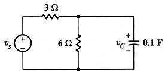

A04 TR analysis: RC circuit with given initial values
Question. Given the following circuit, find a symbolic expression for voltage in capacitor if vs=9*cos(t) and vc(0)=2 volts.

Solution:
Label nodes and elements. Define variable cir containing circuit description. I used this description:
"es,1,0,9*cos(t),0; r3,1,2,3,0; r6,2,0,6,0; cv,2,0,1/10,2" à cir
Notice that I did not define c as c1 or any other c followed with a number because variables from c1 to c99 are reserved variables. The fifth term in capacitor cv description is 2 volts, the initial voltage in capacitor.
Simulate this circuit using transient analysis.
sq
\tr(cir)Ask for voltage you wish.
v2
Answer: The answer Symbulator gives is the right one, and is partially shown in the screen. You can see the rest in the calculator by scrolling to the right. Up to date, there is no other circuit simulator for any calculator that finds this answer. Symbulator presents it in fraction form.